物理模拟基础#
USD Schema 中的物理属性#
资产的物理属性均通过 USD Physics Schemas 和 Physx Schemas 进行了明确定义。物理属性的文档及其在代码中的访问方式已在 C++ 中定义，但您可以遵循 这些指南 在 Python 中找到等效的调用方法。例如，当使用通用名称来表示任意 API 时，一般用法如下：
import omni.usd
from pxr import PhysxSchema, Usd, UsdGeom, UsdPhysics
stage = omni.usd.get_context().get_stage()
prim = stage.GetPrimAtPath("/Path/To/Prim")
physics_api_prim = UsdPhysics.SomePhysicsAPI(prim)
physx_api_prim = PhysxSchema.AnotherPhysxAPI(prim)
# Check if the API is Applied, if not, Apply it.
if not physics_api_prim:
physics_api_prim = UsdPhysics.SomePhysicsAPI.Apply(prim)
physics_attr = physics_api_prim.GetSomePhysicsAttr()
physx_attr = physx_api_prim.GetPhysxAttr()
# Check if Attribute is authored, otherwise create it
if not physics_attr:
physics_attr = physics_api_prim.CreateSomePhysicsAttr(1.0)
print(physics_attr.Get())
physics_attr.Set(10.0)
在某些情况下，将 Prim 转换为特定 API 时可能需要额外的参数，例如，Joint State 确实需要指定关节类型（例如“Prismatic”或“Angular”）。在这些情况下，C++ 签名中将包含“TfToken”类型。将其替换为基本字符串即可在 Python 中正常工作。
如果你需要知道在 UI 中看到的某个物理属性的属性名称，请将鼠标悬停在属性面板中的该属性上，其名称将显示在工具提示中。属性名称的标准格式为 schema_name:attribute_name，因此，例如刚体上的 physics:velocity 表示它使用了 Physics Rigid Body API，且属性名称为 velocity，因此对应的属性获取器为 UsdPhysics.RigidBodyAPI(prim).GetVelocityAttr()。
仿真时间线#
仿真时间不同于实时时间。根据系统配置和仿真环境的大小，每个时间步的计算速度可能快于或慢于其模拟的时间，如果按顺序呈现结果，则会导致速度失真（通常，Isaac Sim 中的物理仿真速度快于实时速度）。为了缓解此问题，Isaac Sim 默认配置了一个限制器以匹配实时速度。
此外，仿真可能以比渲染更快的速度运行，这意味着对于每个渲染帧，后台可能会发生多个仿真时间步。在下面的简化示例中，仿真设置为每秒运行 120 个时间步，而渲染设置为每秒 60 帧，导致每个渲染帧对应两个物理步：

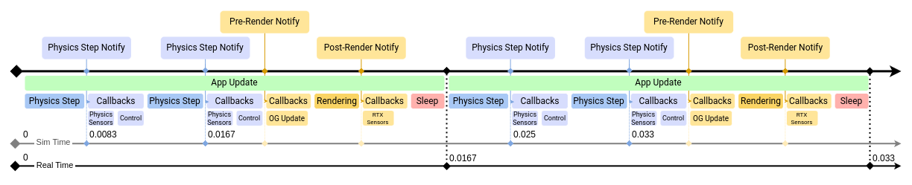
注意
物理步时间不一定与系统时间（从仿真开始算起）一致。在仿真可以快于实时速度运行的情况下，可以在时间轴中运行仿真的加速版本，而无需渲染或帧率阻塞。
理想情况下，仿真和渲染的频率应匹配或互为倍数，但实际情况并非总是如此，因此每个渲染帧可能包含数量不等的仿真时间步。例如，仿真设置为每秒 100 步，渲染设置为每秒 30 帧，导致大多数渲染更新包含 3 个仿真步，但偶尔在一帧中包含 4 个仿真步。
时间轴上有三个事件流（还有其他几个，但这些是与 Isaac Sim 最相关的）。您可以直接订阅 Simulation Events 或 Frame update events，这些事件可以在渲染前或渲染后触发。OmniGraph 节点通常在 pre-render 事件上更新，但也可以设置它们在不同的事件上更新，例如每个物理步。
配置帧率#
可以通过调整当前 stage 元数据来配置 stage 的 Timecodes per second。在 Layer 选项卡中，选择 Root Layer，然后在属性面板中修改 Timecodes per second 属性。在 GUI 默认设置 /app/player/useFixedTimeStepping=true 下，时间轴使用 1 / TimeCodesPerSecond 作为其每个刻度的 dt，因此该值既设置仿真的挂钟播放速率，也设置记录的动画速率。物理步速率在 Physics Scene 上单独配置（参见下文的 Configuring Simulation Timesteps）；有关这三个速率之间的关系，请参阅 Architecture: Timeline, Physics, and the Renderer。

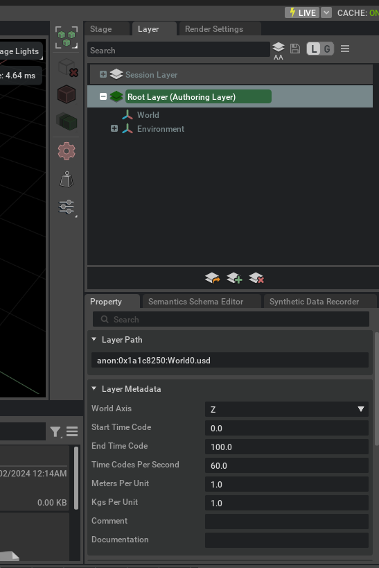
配置仿真时间步#
每秒的仿真步数在 Physics Scene 中确定。如果 stage 中没有 Physics Scene，则使用默认值，即每秒 60 步。
要添加 Simulation Scene 元素：
点击 Create > Physics > Simulation Scene。
选择 Simulation Scene。
在 Properties 面板中检查 Simulation Steps per Second 属性。

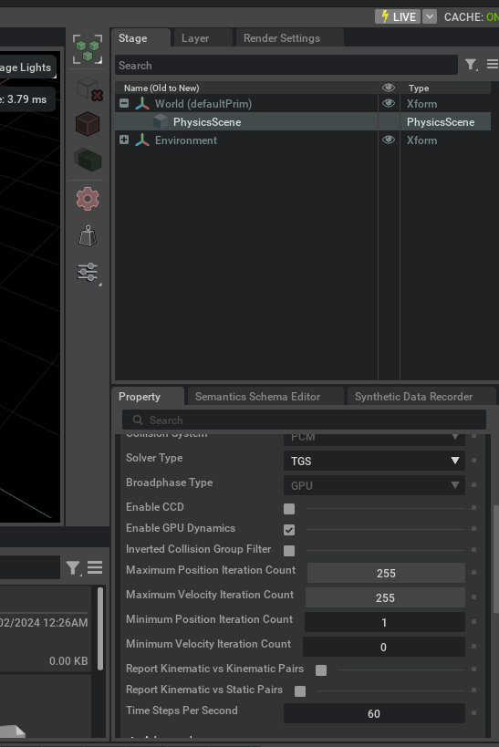
有关 Physics Scene 中其他参数的详细信息，请参阅 Omniverse Physics Developer Guide。
仿真组件#
USD stage 中的 Prim 默认未启用物理功能，但您可以通过 UI 或使用 Python 脚本添加仿真属性。以下示例创建了一个场景，随着我们逐步介绍基本物理对象类型，将向其中添加元素。
首先，创建一个新场景并向其添加地面平面：File > New，然后 Create > Physics > Ground Plane。
刚体#
这是最基本的元素。添加刚体动力学可使元素受到重力加速度和其他外力的作用。
1, 添加一个容器作为我们的刚体：Create > Xform。
2. 在属性面板中将其向上移动到 Z=10。
3. 要将其设为刚体，请在舞台中右键单击它，然后选择 Add > Physics > Rigid Body。

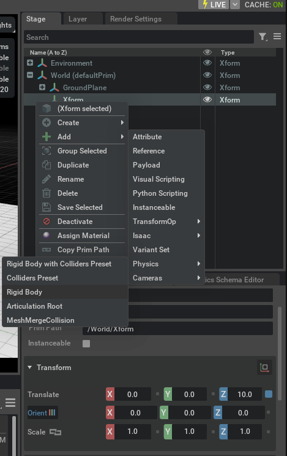
验证 Xform 现在已成为刚体，尽管由于没有可视网格，你可能看不到太多变化。
你可以通过在其中嵌套一个 Cube 来解决这个问题：
Create > Mesh > Cube，并将其拖入 Xform 中。
确保 Cube 的 Translate 设置为 [0,0,0.5]。

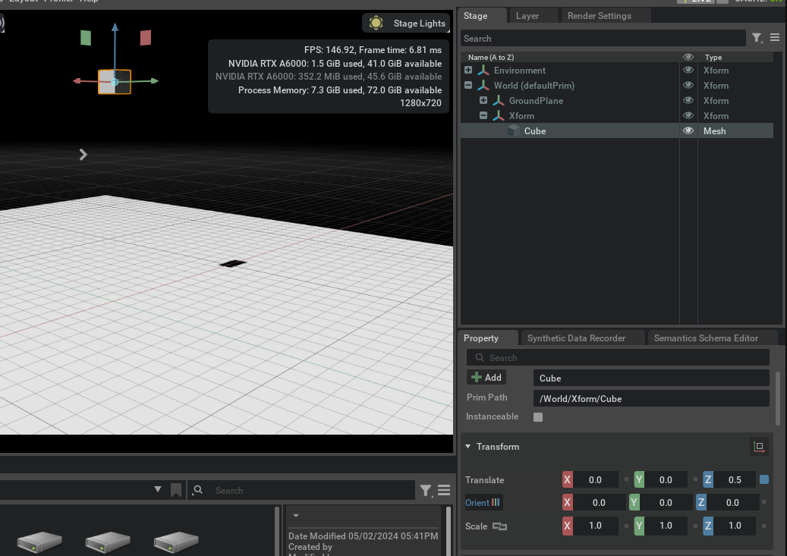
完成与上述截图相同的设置后，点击播放并查看结果：
请查看以下内容：
注意当物体下落时 Z 位置是如何更新的——这是因为我们直接高亮了刚体。尝试再次选择 Cube，你会发现它不会改变。
Cube 直接穿过地面掉落。我们需要让模拟知道它需要与其他物体发生碰撞。
碰撞体#
要使我们的刚体发生碰撞，你必须向模拟指示你希望它这样做。为此，可以使用 Collider API。
选择 Cube prim，然后点击 Add Button > Physics > Collider。
再次运行模拟，并验证刚体是否在地面处停止。
碰撞体也可以添加到不可移动的物体上。让我们尝试一下：
创建一个新的 Cube 并将其放置在 Z=3.0 处。
然后将其缩放比例更改为 [2,2,0.01] 以创建一个 2x2 米的平台。
像之前一样为其添加碰撞体，但不要添加 Rigid Body。

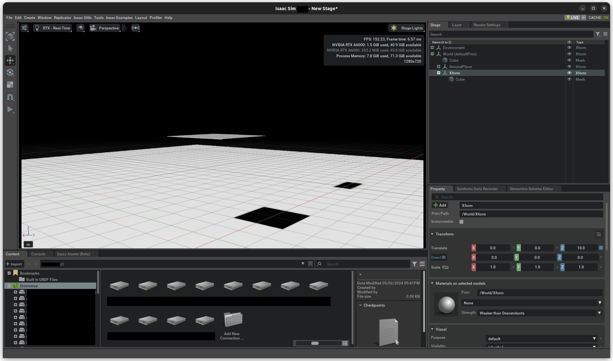
再次播放模拟，并验证结果是否如下所示：

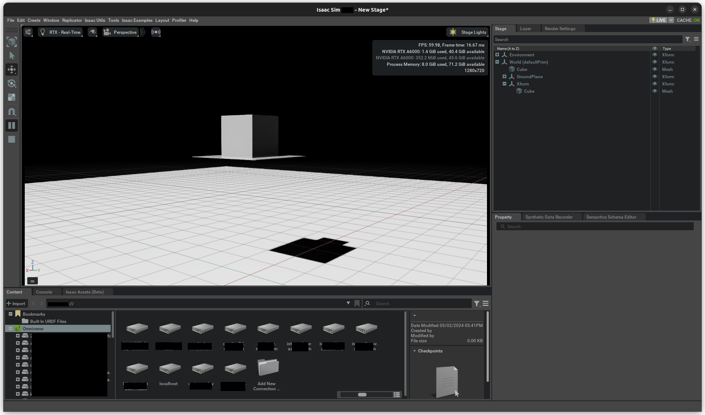
将 Xform 的位置提高到 Z=80。
再次播放模拟。
在此示例中，你正在解决物理模拟中的一些常见问题。由于时间是离散化的，如果物体移动过快，在一个时间步长内物体位于平台上方，而在下一个时间步长中它已完全穿过平台，导致未检测到碰撞。 地面平面不会出现这种情况，因为它实现了一个“力场”，会将穿透的物体推向地面表面。
为了解决这个问题，请在物理场景中启用名为 Enable CCD（连续碰撞检测）的选项。CCD 会扫描物体从一个姿态到下一个姿态的过程。此选项也必须在刚体本身中启用：
选择 Xform。
在属性面板中，在刚体属性下启用 CCD。
还有其他方法可以解决此问题，但对于此场景，这是最有效的方法。
请记住，碰撞与你在屏幕上看到的内容无关。例如，你可以隐藏立方体，碰撞体仍会以相同方式运行；或者你可以在 Xform 下添加另一个立方体或球体，除非你对它们应用 Collision API，否则它们不会有任何效果。
许多物体碰撞体是通过组合多个网格元素制成的，从而赋予其形状和行为。即使它们在舞台上物理上是分离的，只要它们都是刚体的子对象，它们就会作为一个单一的刚体工作。
尝试向此刚体添加或移除碰撞体，或向此场景添加更多刚体，并观察它们的行为。
凸包#
接下来的碰撞体实验将移除你之前添加的平台，并将我们的 Xform 返回到 Z=10。
在
Z=3.0处用 Torus 网格替换平台，并将其缩放为 [5.0, 5.0, 5.0]。添加 > 物理 > 带碰撞体的刚体预设。
运行模拟。
立方体停留在圆环的孔洞上方，因为网格几何体的默认近似方式是凸包。这是一种模拟引擎可以高效处理的近似方式，也就是说，它们是高性能模拟的不错选择。我们将在下面介绍更复杂、因此计算开销更大的近似方式。
要查看正在使用的碰撞形状：
点击视口左上角的眼睛图标。
按类型显示 > 物理 > 碰撞体 > 已选中。
确认圆环上出现绿色线条。
这是碰撞形状的调试视图。
你还可以通过打开物理调试菜单来查看碰撞体的实体显示： 1. 窗口 > 模拟 > 调试。 2. 在调试窗口中，滚动到“Collision Mesh Debug Visualization”。 3. 勾选“Solid Mesh Collision Visualization”。 4. 确认当你选中圆环时，其形状以实体形式显示。
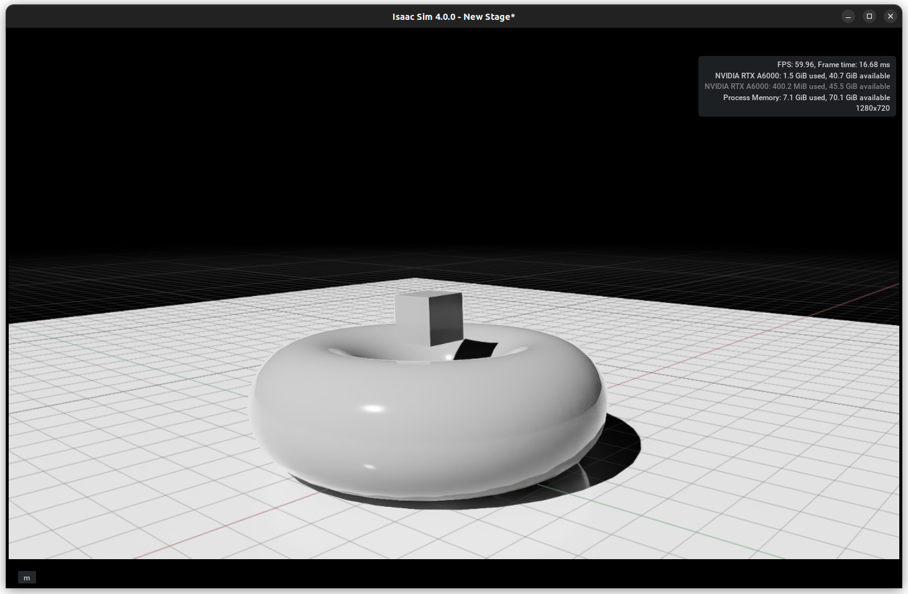 |
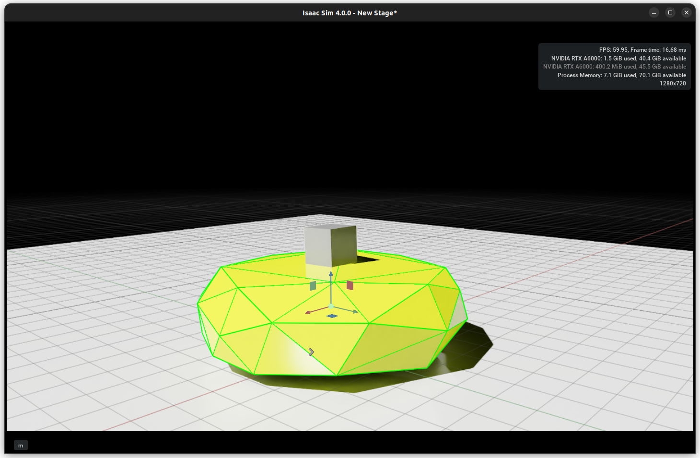 |
凸分解#
以较小的开销，圆环碰撞体可以通过多个凸形状的组成来拥有孔洞。这种组成可以是：
通过添加多个形状手动创建
使用物理凸分解计算得出
选中 Torus。
在属性面板中，向下滚动到 Collision 部分，并从下拉菜单中选择 Convex Decomposition。
打开 Advanced 选项卡，您可以调整参数，直到找到令您满意的分解结果。
注意
凸包数量越少，通常性能越高。
在 Simulation Debug 选项卡中，您还可以增加 Explode View 距离以分离碰撞体形状，从而更好地理解组合方式。

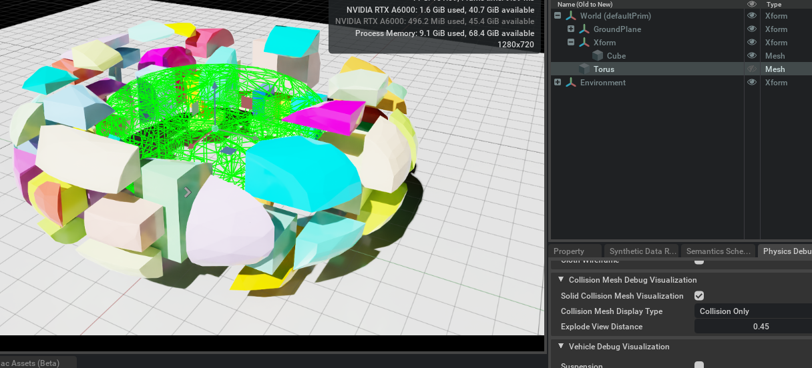
Collider 下拉菜单包含更多可供探索的选项，例如 Bounding Cube 和 Sphere（成本最低的碰撞类型），以及“Sphere Approximation”模式，该模式类似于 Convex decomposition，但直接使用一组球体而不是贴合的网格。
注意
虽然刚体不支持三角网格和网格简化，并会回退到凸包，但可以通过添加有符号距离场（signed-distance field）直接在刚体上使用三角网格几何体；为此，请在近似下拉菜单中选择 SDF Mesh。
有关 Rigid Bodies 和 Colliders 的更多详细信息，请参阅 Rigid Body Simulation 和 Colliders。
接触与静止偏移#
在 Collider Advanced 选项卡中，还有两个参数，当出现碰撞问题（特别是涉及小型和薄型物体时）时，它们可能是重要的调优参数。
Rest Offset 可用于膨胀或收缩碰撞几何体集合；当视觉网格大于或小于碰撞几何体时，调整此参数非常有用，以便使碰撞位置与视觉表现保持一致。
Contact Offset 决定了模拟引擎在距离碰撞几何体多远的位置开始生成接触约束，该距离不受 Rest Offset 影响。调整 Contact Offset 需要在性能与碰撞保真度之间进行权衡：较大的 Contact Offset 会生成大量接触约束，从而增加计算开销；较小的 Offset 可能导致接触检测过晚，其症状包括抖动、漏检接触，甚至发生穿透（参见上文关于 CCD 的说明）。
接触与摩擦#
除了确保物体不发生相互穿透外，碰撞还可以传递或耗散能量，这通过恢复系数和摩擦来建模。
接触模型的参数可在 Physics materials 中获取。要创建 Physics material：
前往 Create > Physics > Physics Material。
选择 Rigid Body Material。
物理材质通常被分配给 Collider Geometry，但在其他方面其行为类似于 USD 渲染材质；有关 USD 材质解析逻辑的完整说明，请参阅 Physics Materials。例如，您可以为刚体的不同碰撞几何体分配不同的材质，或者您可以将材质分配给刚体 prim 并将其配置为覆盖在子碰撞体上设置的任何材质。
要分配物理材质：
选择碰撞体 prim。
滚动至 Collider 设置。
在 Physics Materials on Selected Models 中，选择所需的材质。该列表仅允许选择具有物理属性的材质。
请注意，您也可以通过 “Add” > Physics > Rigid Body Material 将物理材质添加到渲染材质中，并在渲染材质部分分配该材质；物理属性将被自动获取。
柔性接触#
您可以在 Advanced 选项卡中配置刚体材质，以产生柔性（即弹簧-阻尼）接触动力学。这对于使用刚体近似模拟可变形体可能很有用。
组合模式#
由于接触是两个物体之间的交互，仅凭单个接触参数不足以描述这种交互的表现方式。就像现实世界一样，一种表面材质属性可能主导交互，或者它们可能无缝地结合为一个平均值。为了复现这一效果，摩擦、恢复系数和柔性接触阻尼都提供了可配置的合并模式字段。由于接触双方都具有此合并模式，因此合并模式的优先级至关重要：
在下拉列表中位置越靠下，该模式在解决合并冲突时的优先级就越低；因此 average < min < multiply < max。
例如，如果 Collider A 的摩擦合并模式为 average，而 Collider B 的合并模式为 min，则它们之间的交互将解析为两者之间的最小摩擦值。如果具有 max 合并模式的物体 C 与 A 和 B 发生接触，则 A 与 C 之间的摩擦将按 max 解析，B 与 C 之间也是如此。
关节#
机器人通常由多个通过关节连接的刚体组成。关节在两个物体之间创建约束。在下文中，你将使用一个 Revolute Joint（旋转关节），但其他关节类型的步骤类似，有关列表请参见 Joints。
必须为每个待连接物体配置关节框架的相对姿态。有关更多详细信息，特别是关节框架的局部缩放方面，请参见 Joint Frames Section。

请注意，通过 UI 创建关节时，关节框架会设置为与创建时选定的第二个刚体的姿态匹配。
现在按如下方式创建关节：
首先选择 Xform 刚体，然后选择 Torus 刚体。
前往 Create > Physics > Joints > (Joint Type)。
在本教程中，使用 Revolute Joint 类型。由于 Torus 是第二个被选中的，因此关节位于其中心。
你会注意到屏幕上出现一个圆圈，代表关节的原点和运动范围。如果现在启动模拟，Torus 和 Cube 会一起下落。当 Torus 撞击地面时，Cube 停止移动。它处于稳定位置，但如果你轻推它，它会沿圆形轨迹向下移动。按住 Shift 并左键单击 Cube 即可与其交互。
检查属性面板并查看以下属性：

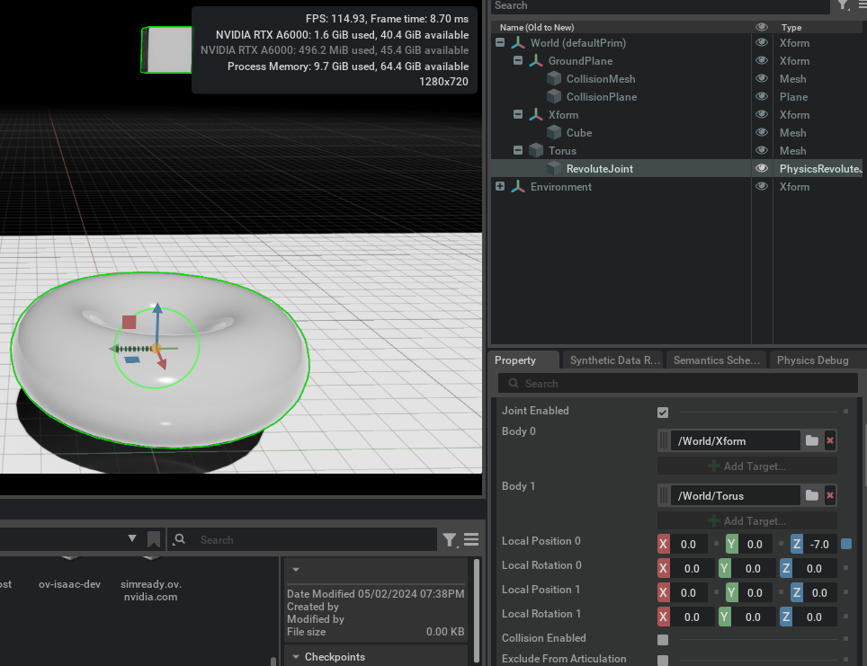
刚体 0：/World/XForm
刚体 1：/World/Torus
这些是相对于物体的姿态。你会注意到 Position 0 是 Z=-7.0。
位置 0：
[0, 0, -7.0]旋转 0：
[0, 0, 0.0]位置 1：
[0, 0, 0.0]旋转 1：
[0, 0, 0.0]
注意
在设置作为关节链（articulation）一部分的关节时，请确保在关节链层级结构中，Body 0 是 Body 1 的父级。这样，诸如连杆传入关节力或关节驱动目标等与关节相关的量在 PhysX SDK 和 USD 之间具有一一对应关系。
关节轴#
旋转关节提供一个自由度，您可以选择关节框架的哪个轴是自由的。默认情况下，选择 X 轴。您可以在 Properties 面板中的 Revolute Joint 部分更改此设置。
关节限制#
关节限位确定关节可以从其原始位置移动多远。默认情况下，创建关节时不带有限位。选中关节后，在 Properties 面板中向下滚动，并在 Revolute Joint 部分下修改 Lower Limit 和 Upper Limit。请记住，USD 使用度而不是弧度来表示角度。
添加关节驱动#
您可以使用 Joint Drive 来控制关节添加的自由度的位置和速度。您可以通过点击 Add Button > Physics > Angular Drive 来实现这一点。有关配置关节驱动的详细信息，请参阅 Tutorial 11: Tuning Joint Drive Gains。
关节链#
Articulation 是一种针对关节体的优化仿真结构，可为机器人技术提供更优的性能、保真度和功能。在拓扑结构（闭环）和关节支持方面存在一些限制，详情请参阅 Articulations。有关调整 Articulation 的完整指南，请参阅 Articulation Stability Guide。
有关总体仿真提示和常见问题解答，请参阅 Physx Simulation Hints and FAQ。
使用物理步进 OmniGraph#
为确保在物理步进发生时每个物理步进执行一次图形步进，必须使用 OmniGraph 的修改版本。
通过 Create > Visual Scripting > Action Graph 创建新的 Action Graph。
在舞台上选择创建的图形，并在 Raw USD Properties 部分的 pipeline stage 中，选择 PipelineStageOnDemand。
在 Action Graph 窗口中，搜索 On Physics Step。将其拖放至 OmniGraph 上。
按常规方式继续构建 OmniGraph。

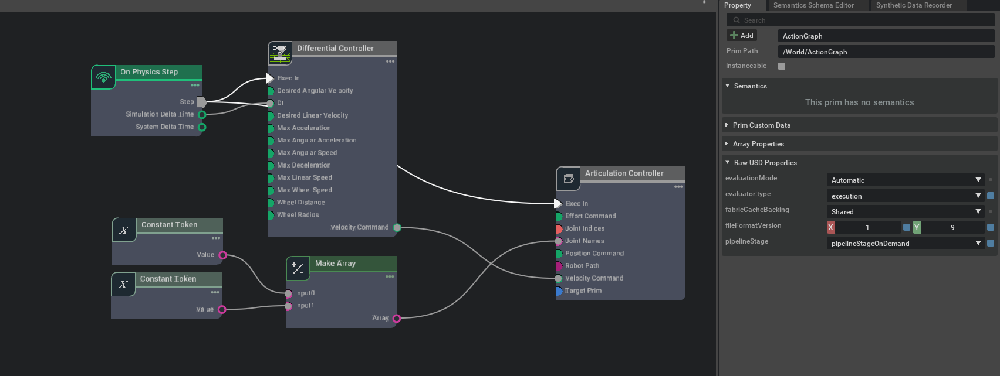